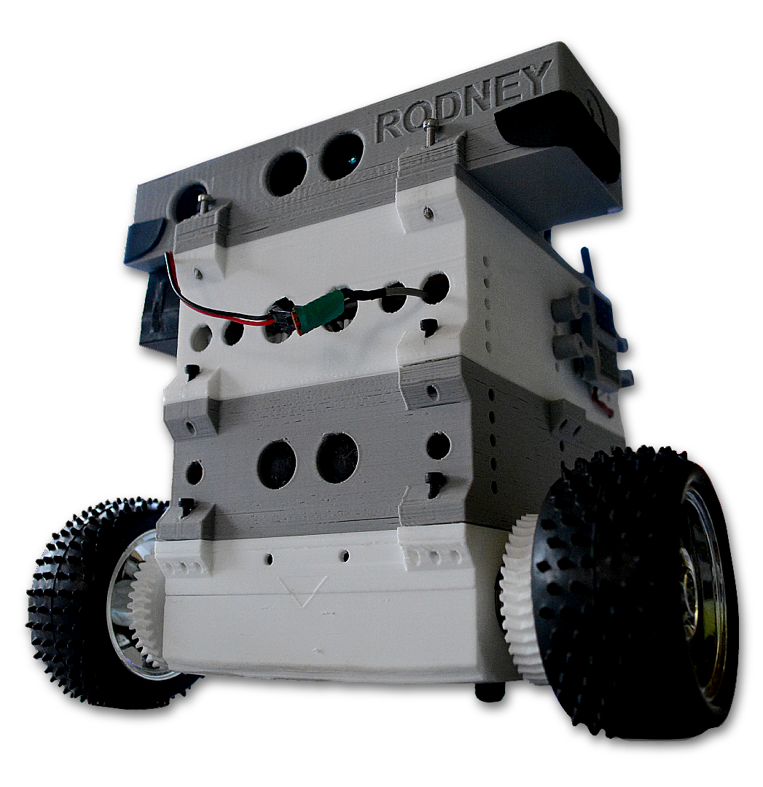

Rodney
Interface Web
Sobre
Conecte
Contato
O Rodney Interface foi pensado como uma maneira simplificada de teleoperar o robô Rodney!
Através desse site você poderá interagir remotamente, direcionar e renderizar o trajeto realizado pelo robô.
